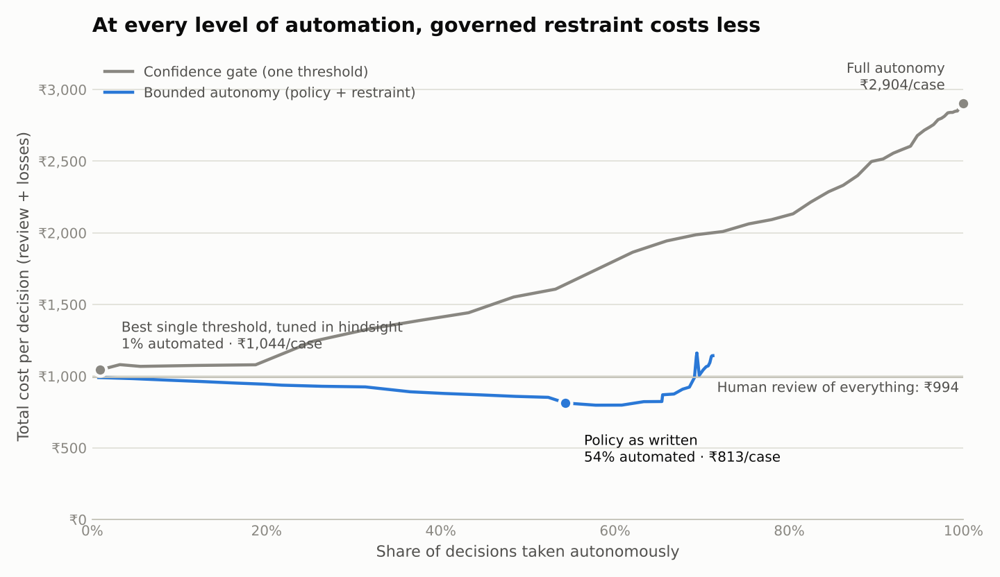
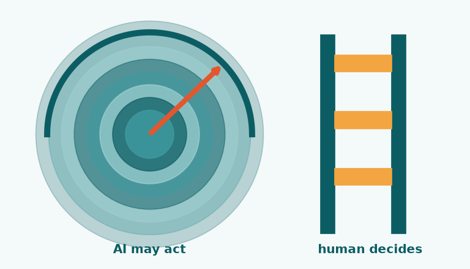
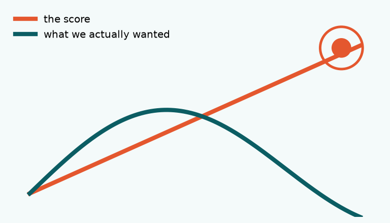
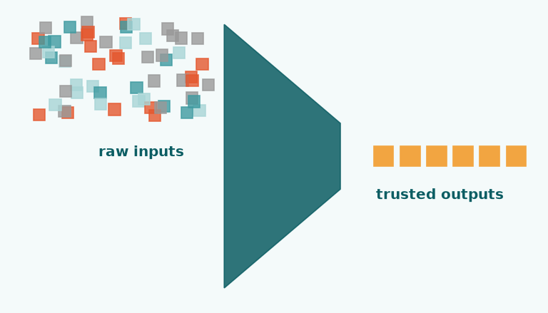

ReadSigil
Ideas are easy. Decisions have consequences.
ReadSigil explores what makes technology useful in the real world: trustworthy evidence, sound judgement, accountable AI and decisions you can defend. Read the analysis, try the tools and learn by doing.
Explore insights →Explore Decision AtlasBuild somethingAI Builder 500Subscribe to The Signal →
New on ReadSigil ·
- The Signal · India & Emerging MarketsIndia wants its most sensitive systems on Indian AI. The first candidates arrived this week
- Agora debate · 174 turnsWill agents Goodhart every metric we give them?
Case Files · You make the call
The Churn Signal: three numbers, one banking decision.
Three teams disagree about customer attrition. Review their figures, decide what the bank should do, and compare your recommendation with the subsequent analysis.
Labs · Try, build, play
Selected essays

Bounded autonomy: why the most valuable AI in a bank knows when not to act
The dangerous moment for a decisioning model is not when it is unsure. It is when the world has changed, the model has not noticed, and it is still confident.

Faster cars need better brakes
Nobody buys a sports car for its brakes, yet the brakes are what let you drive it fast.

When the score becomes the goal
Once a number is used as a target, people find ways to move the number that do not move the thing it was supposed to measure.

Models are only as good as their inputs
Larger models are better at sounding confident, which makes bad inputs more dangerous rather than less.
The Signal · Free email edition
Get the ideas worth opening.
Source-linked analysis of AI, technology and better business decisions.
Elsewhere: ETBFSI on responsible agentic AI ↗ · All media and conversations →